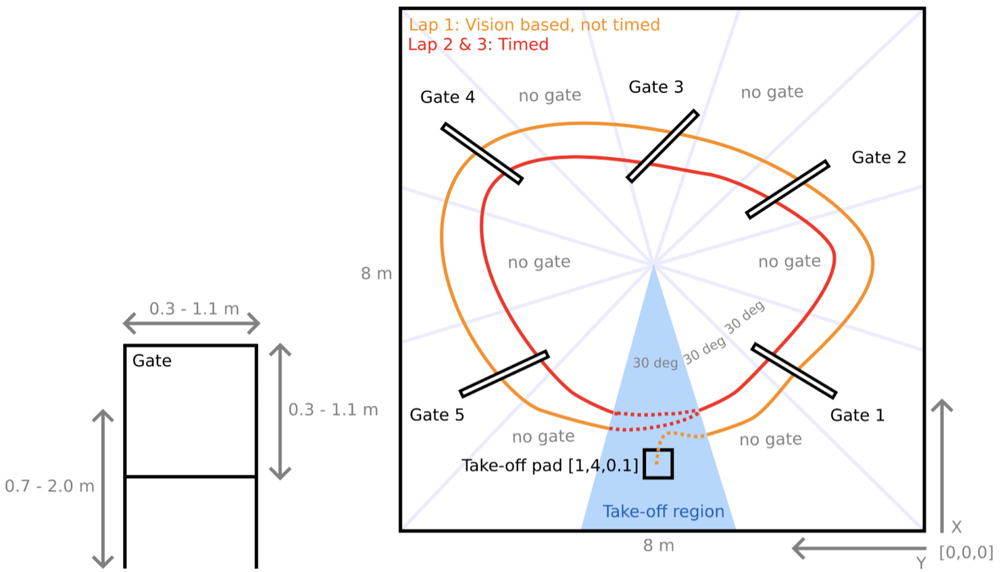
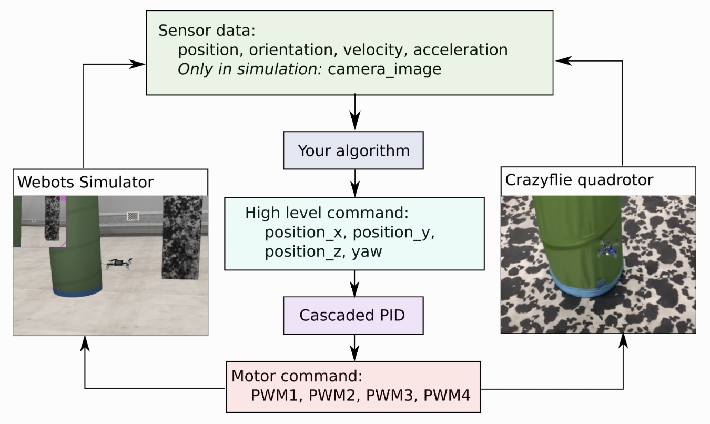

Spring 2025 · Aerial Robotics course
Aerial Robotics
Programming a Crazyflie mini-drone to fly a gate course autonomously and as fast as possible, first in simulation, then on the real quadrotor.
- EPFL, Lausanne
- Simulation code
- Hardware code
Overview
The project bridges simulation and real-world robotics: the same algorithms had to work in Webots and on the physical Crazyflie. The challenge combined autonomous take-off, vision-based gate detection, speed-optimised navigation and the transfer from simulation to hardware.
Simulation
In a randomly generated arena with five gates arranged in a loop, the drone:
- takes off from a platform;
- detects the gates with OpenCV on its first lap;
- uses the gate positions it has found to fly faster laps, counter-clockwise;
- works in any arena generated with this structure, not just one fixed layout.
Hardware
The algorithms were then transferred to the real Crazyflie in a smaller arena with the same structure. Gate positions are known in advance there, so vision is not needed, but the controllers needed significant re-tuning to cope with real-world dynamics, sensor noise and latency.


What I worked on
- Perception: OpenCV gate detection from the onboard camera.
- Planning: trajectory optimisation for speed while keeping control.
- Control: PID tuning for stable flight, in simulation and on hardware.
- Sim-to-real: adapting the simulation code to sensor noise, latency and the limits of the embedded hardware.